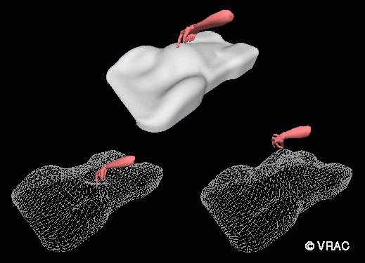

Direct Shape Manipulation in a Virtual Environment
The car shell is represented as a NURBS surface. The direct manipulation
approach for NURBS free form deformation is used to allow the designer
to "push" (A) or "pull" (B) on the surface to change the shape. An image
of the user's hand can be seen in the virtual environment and corresponds
to the user's real hand motion which is detected by the Cyberglove
sensors.
Return to Introduction...